Keeping Oracle databases up to date is critical for performance, security and compliance. I recently used autoupgrade.jar in patching mode to move a 19c database to Release Update 19.25 — it downloaded the patches, built a new Oracle home, patched the database and left a restore point behind, all from one config file. Here's the whole run.
autoupgrade.jar from My Oracle Support (it's updated often), test the whole process in a non-production environment first, and make sure your backups are in place.One small config file describes the database to patch and where everything goes:
global.global_log_dir=/u01/software/log
global.keystore=/home/oracle/autoupgrade/keys
upg1.sid=cdb1
upg1.source_home=/u01/app/oracle/product/19.0.0/dbhome_1
upg1.target_home=/u01/app/oracle/product/19.0.0/dbhome_2
upg1.folder=/u01/software/patch
upg1.download=YES
upg1.patch=RECOMMENDED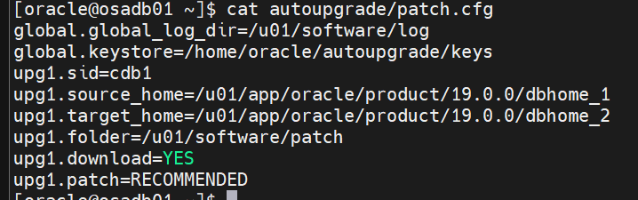
| Parameter | Meaning |
|---|---|
keystore | Secure directory that holds the AutoUpgrade keystore (your My Oracle Support credentials) |
source_home | ORACLE_HOME the database runs from now |
target_home | Directory where AutoUpgrade creates the new, patched ORACLE_HOME |
sid | ORACLE_SID of the database to patch |
folder | Directory holding the patch zip files and the base image |
download | YES lets AutoUpgrade fetch missing patches from My Oracle Support |
patch | Comma-separated list of what to install (default RECOMMENDED) |
patch| Value | Installs |
|---|---|
RECOMMENDED | Alias for RU,OPATCH,OJVM,DPBP (the default) |
RU | Latest Release Update |
RU:x.y | A specific Release Update, e.g. RU:19.24 |
OPATCH | Latest OPatch |
OJVM | Oracle Java VM patch matching the RU |
OJVM:x.y | A specific OJVM patch, e.g. OJVM:19.24 |
DPBP | Data Pump bundle patch matching the RU |
<number> | A specific one-off patch |
method=OUTOFPLACE (out-of-place patching into a new home, as here), the list must include RU,OPATCH.AutoUpgrade patching has three job modes, plus a download mode that only fetches patches. Each runs a different set of stages:
| Mode | Stages |
|---|---|
| analyze | PRECHECKS |
| fixups | PRECHECKS, PREFIXUPS |
| deploy | GRP, PREACTIONS, PRECHECKS, PREFIXUPS, EXTRACT, INSTALL, ROOTSH, DBTOOLS, OPATCH, PATCHING, POSTCHECKS, POSTFIXUPS, POSTACTIONS |
Every command below runs from the AutoUpgrade directory, using the Java that ships with the database home:
$ORACLE_HOME/jdk/jre/bin/java -jar autoupgrade.jar -patch -config patch.cfg -mode <mode>For AutoUpgrade to download patches, store your MOS credentials in its keystore with -load_password. The first run creates the keystore and asks you to set a password for it:
$ORACLE_HOME/jdk/jre/bin/java -jar autoupgrade.jar -patch -config patch.cfg -load_password
# Inside the MOS> prompt:
MOS> add -user <your-mos-username> # then enter your MOS password twice
MOS> save
MOS> list # "MOS Credentials Loaded - Connection Successful"
MOS> exit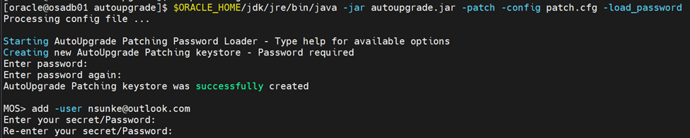
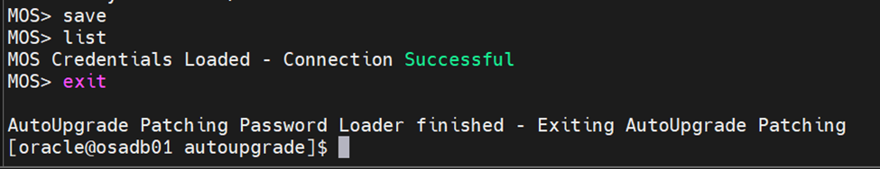
$ORACLE_HOME/jdk/jre/bin/java -jar autoupgrade.jar -patch -config patch.cfg -mode download
ls /u01/software/patch/AutoUpgrade connected to MOS, worked out what RECOMMENDED means today, and downloaded and validated each file:
| Patch | File |
|---|---|
| Database Release Update 19.25.0.0.0 | p36912597_190000_Linux-x86-64.zip |
| Data Pump Bundle Patch 19.25.0.0.0 | p37056207_1925000DBRU_Generic.zip |
| OJVM Release Update 19.25.0.0.0 | p36878697_190000_Linux-x86-64.zip |
| OPatch 12.2.0.1.44 (Oct 2024) | p6880880_190000_Linux-x86-64.zip |
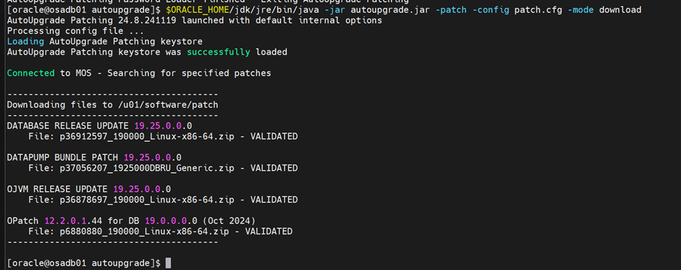
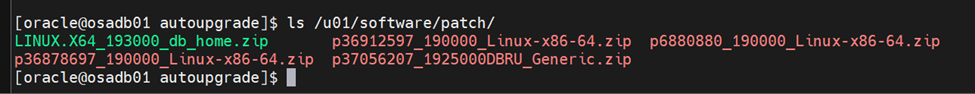
The folder also contains LINUX.X64_193000_db_home.zip — the 19.3 base image AutoUpgrade unzips to build the new home.
$ORACLE_HOME/jdk/jre/bin/java -jar autoupgrade.jar -patch -config patch.cfg -mode analyzeThe files are already there, so each one is reported as LOCATED. The job runs in the background and you get a patch> console. Useful commands there:
lsj # list jobs and their current stage
status -job 100 # details for one job: logs, stages, per-container progress
/ # repeat the last command
help # all console commands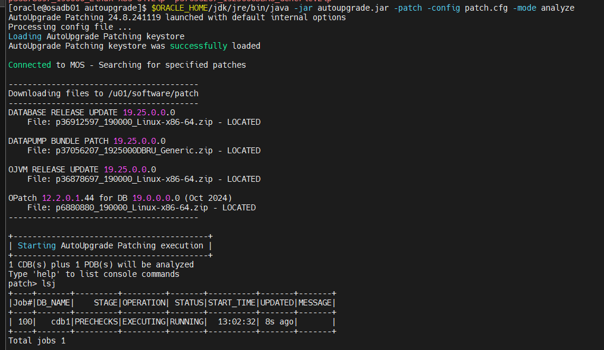
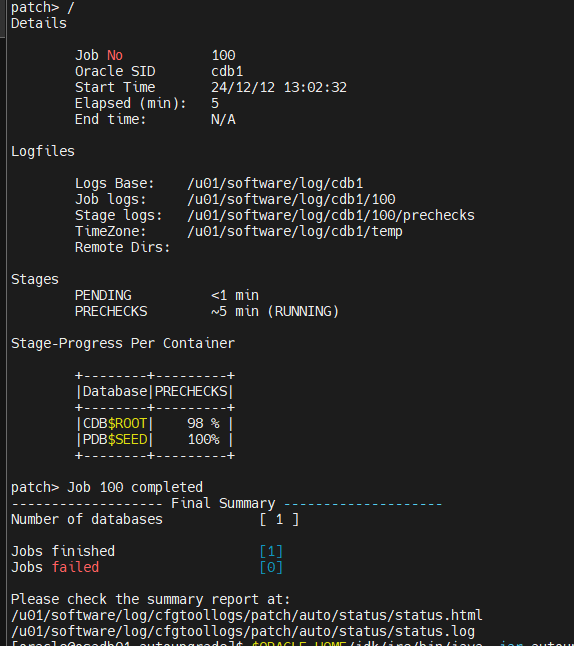
Job 100 finished with no failures. Read the pre-check report under /u01/software/log/cdb1/100/prechecks, and the summary at /u01/software/log/cfgtoollogs/patch/auto/status/status.html, before deploying.
$ORACLE_HOME/jdk/jre/bin/java -jar autoupgrade.jar -patch -config patch.cfg -mode deployDeploy mode created a guaranteed restore point (GRP), built and patched the new home, moved cdb1 into it and ran datapatch. Job 101 took about 2 hours 20 minutes in this lab:
| Stage | Time | Relative time |
|---|---|---|
| GRP, PREACTIONS | <1 min | |
| PRECHECKS | 4 min | |
| PREFIXUPS | 9 min | |
| EXTRACT | 3 min | |
| INSTALL | 2 min | |
| ROOTSH, DBTOOLS | <1 min | |
| OPATCH | 25 min | |
| PATCHING | ~90 min |
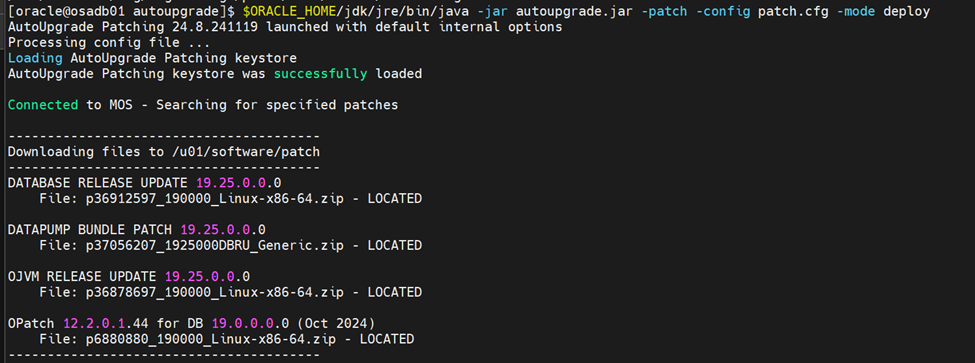
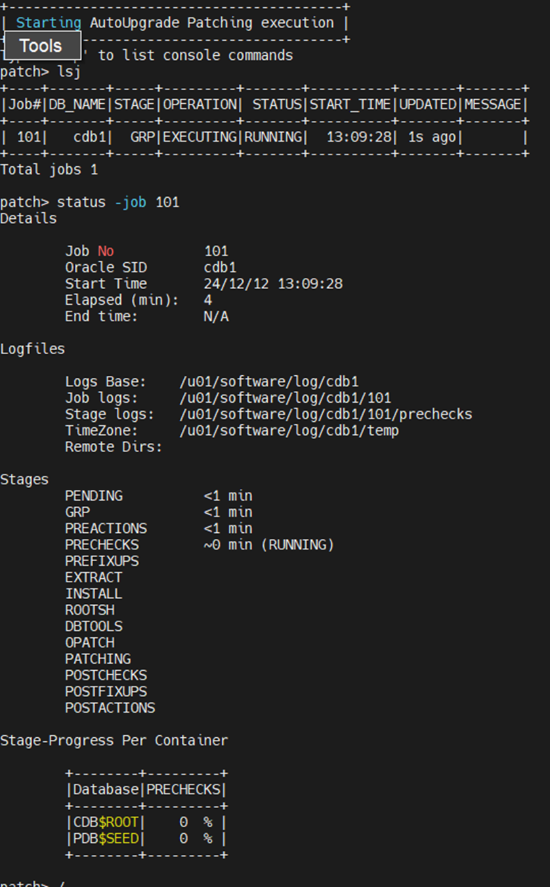
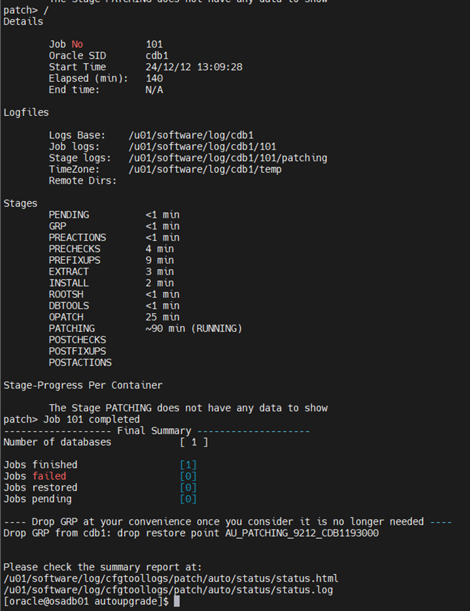
dbhome_2. Update /etc/oratab if needed and any scripts or profiles that set ORACLE_HOME, and keep dbhome_1 until you're sure you won't need to fall back.From the new home, list the applied patches:
$ORACLE_HOME/OPatch/opatch lspatches36878697;OJVM RELEASE UPDATE: 19.25.0.0.241015 (36878697)
37056207;DATAPUMP BUNDLE PATCH 19.25.0.0.0
36912597;Database Release Update : 19.25.0.0.241015 (36912597)
29585399;OCW RELEASE UPDATE 19.3.0.0.0 (29585399)
OPatch succeeded.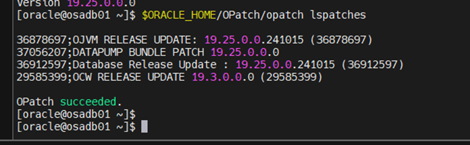
Also confirm datapatch ran inside the database:
SELECT patch_id, action, status, description
FROM dba_registry_sqlpatch
ORDER BY action_time;AutoUpgrade keeps the GRP so you can roll back. A guaranteed restore point keeps flashback logs growing in the recovery area, so drop it once you're happy with the patched database:
DROP RESTORE POINT AU_PATCHING_9212_CDB1193000;AutoUpgrade turned a multi-step manual job — downloading the right RU, OJVM, Data Pump and OPatch patches, building a new home, patching and running datapatch — into four commands driven by one config file. It's a must-have for any Oracle DBA who wants to reduce manual work and patch more consistently. If you haven't tried it yet, start with -mode analyze on a test system.